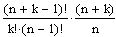

regress(vx, vy, n) or regress(Mx,
vy, n) Returns a vector which interp uses to find the nth order polynomial that best fits the x
and y data values in vx and
vy in the least-squares sense. Can also be used for
multivariate regression, where a matrix Mx of k independent variables and a vector of dependent values,
vy, are used to fit an nth order
polynomial surface in k dimensions.
interp(vs, vx, vy, x) or interp(vs,
Mx, vy, X) Returns an interpolated y-value
corresponding to x using the output vector vs from regress. If regress has been used to fit
a multidimensional surface, X is a vector of independent
variables at which to calculate the interpolated y-value.
Arguments:
vx and vy
are the vectors of real data values with the same length.
Mx is a matrix of
real data values. There is one column for each independent variable (k columns). In this case, vy has the
same number of rows as Mx.
vs is a vector generated
by regress.
n is a positive integer
specifying the order of the polynomial you want to use to fit the data.
The order of the polynomial cannot exceed the number of data points. If
you want a 4th order polynomial in one variable, you must have at least
4 data points.
x is the real value of the
independent variable at which you want to evaluate the regression curve.
X is the vector
of values of the independent variables at which you want to evaluate the
regression surface.
Notes:
The output of regress is a vector containing
variable identification codes as well as the polynomial coefficients.
You can either extract the coefficients, starting with the fourth entry,
or use interp to generate the values of the polynomial. See the
QuickSheet.
regress fits all
data points using a single polynomial, so it does not work well when your
data does not behave like a single polynomial. Use loess
to perform a localized regression.
The number of data values, m, must satisfy:

which is the number of terms, and hence, the number of coefficients,
in the polynomial expression of degree n with
k variables.
While any number of independent variables is allowed,
specifying more than four independent variables takes substantially
more memory and time to calculate.